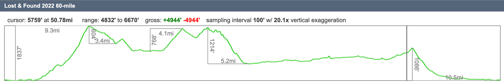
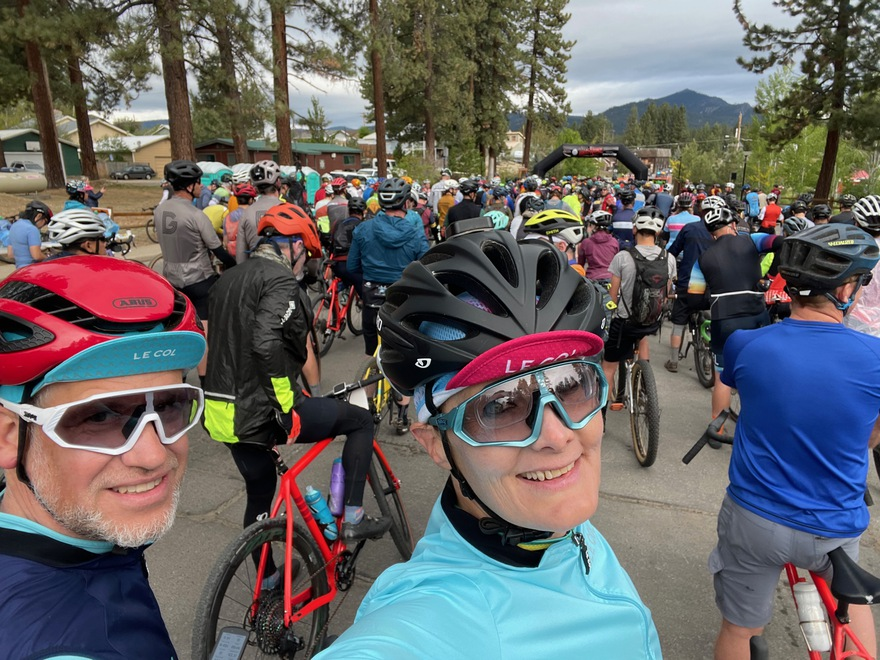
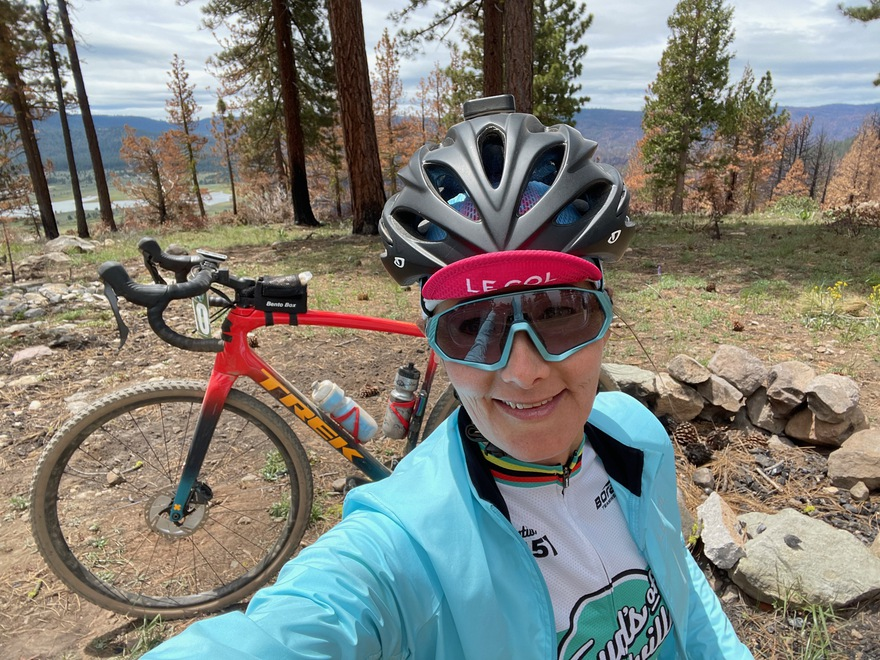
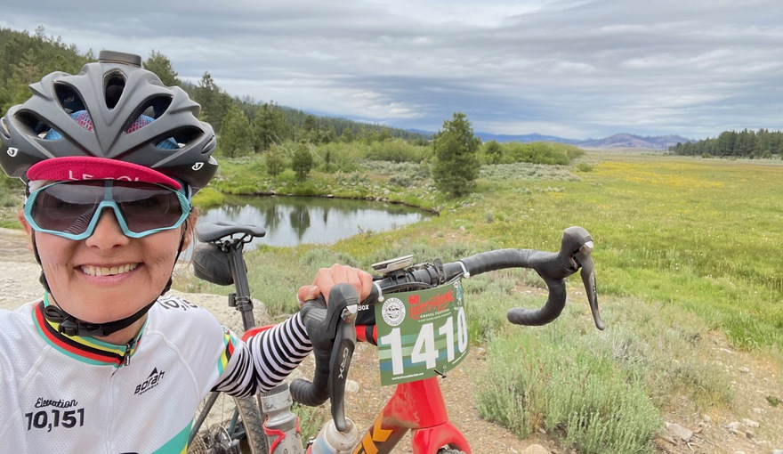
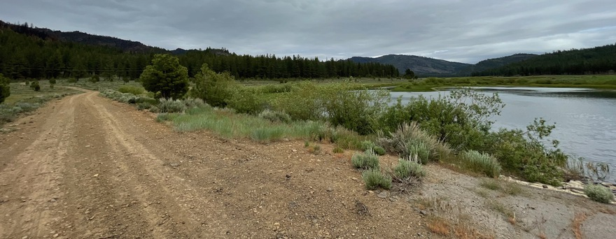
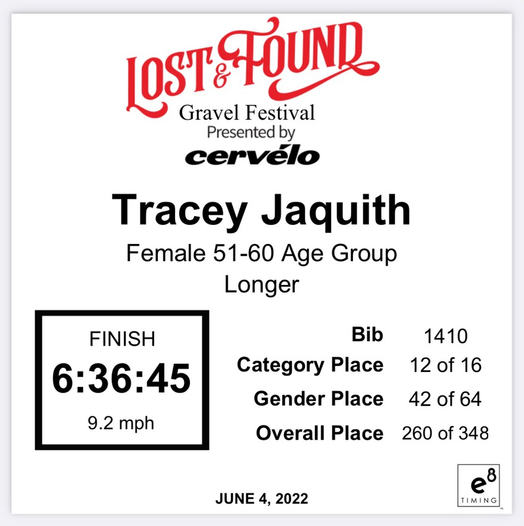
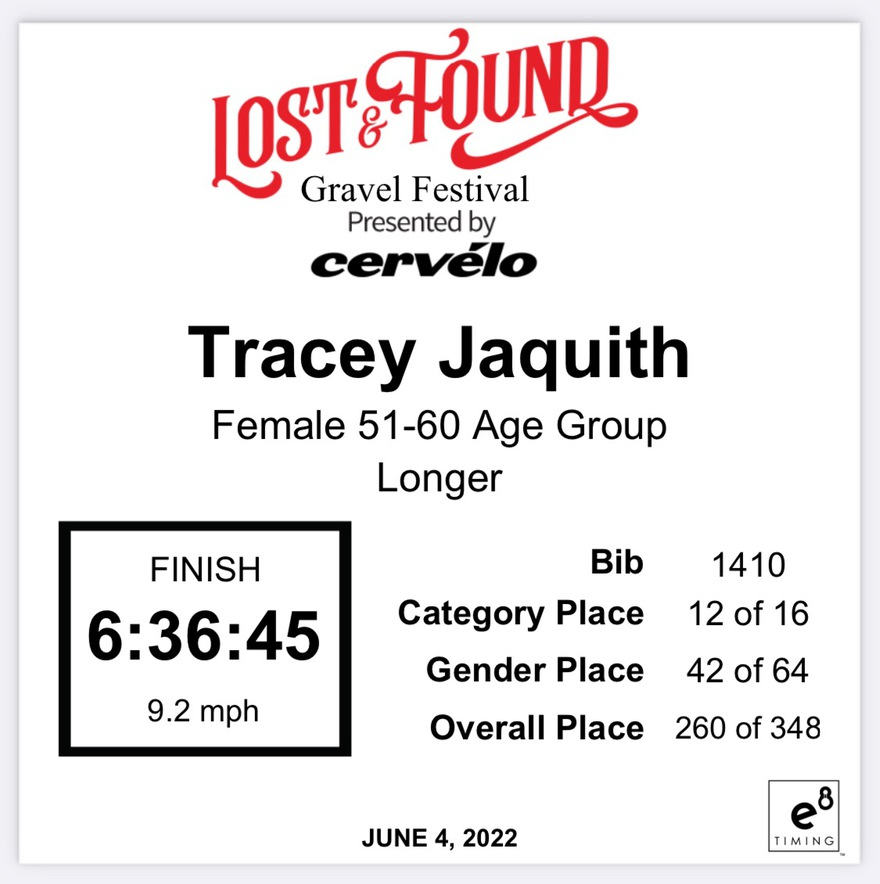

[One Gravel Race](https://lostandfoundbikeride.com/); Two nights camping; 62 miles. OMG I just biked my longest off-road ever -- by a long shot! (This is also my first bike race ever).
I just had an *incredibly* proud and rewarding "race" with my gravel bike, Candy. Hunter and his "Thirsty Thursday" weekly riding friends signed up for this tough, mostly off-road race, in the Sierra mountains, just north of Tahoe.
Hunter encouraged me to join them and try the 35 mile easiest option. I had _just_ done a tough 33 mile mostly off-road "Dirty Zoo" east bay ride with 4500 feet of climbing, to train up, the weekend before.
However, Hunter and all his friends were doing the 60 mile option -- and the day of registration, last minute I decided to try to push myself _really_ hard and see if I could do the 60 mile option. Rationale? It was less than ~500 feet more of climbing than my training weekend trip. I knew I could _likely_ do another 10 miles -- so if I made 45 miles or more, I'd be super happy.
Well, by hitting every rest stop, eating and drinking _tons_, and gracefully perfect weather (I blow up in hot sun rides), I *MADE EVERY MILE!*.

_Most_ of the climbing is at the start -- if you can keep your heartrate decent, not push toooo hard at the start (and not "blow up") -- you can likely finish the ride (if you keep eating/drinking).

Hunter & I starting out. The 100 mile option left one hour before us. We get a Police escort on pavement for the first few miles, then take a right turn, and _SHOWTIME_ -- it's time to climb 1800+ feet, off road.

Hunter & I agreed to do our own pace and text each other at each rest stop. Lake Davis in bacgkround.

I can't believe that at this point, I'm _pretty sure_ I'm going to make it.

 The wildflowers, sunflowers, and green were so beautiful to ride through.
The wildflowers, sunflowers, and green were so beautiful to ride through.
 It was a super-emotional finish line for me! I expected that Hunter and friends were all back at camp. After taking pictures and not *really* racing, I noted if I pushed it the final 10 miles, I *might* make it within *one hour* of Hunter's total time. I pushed *super hard* the final mile into the finish line. I was already crying before I hit the line -- I couldn't believe I did something this long and challenging, without nearly enough long-distance rides to train up for this.
When I saw Hunter and our friends at the finish, whooping it up for my hot rush into the line, it was _such_ an amazing feeling. Hunter and I were both crying. :)

Here's my stats. 9.2 mph overall clock average from the 9am start -- this _vastly exceeded_ my hopes. I thought I was going to get caught up by the "sweeps" for going too slow and taken off the course. Six and a half hours for 62 miles is _really good_ -- I'm super proud!
It was a super-emotional finish line for me! I expected that Hunter and friends were all back at camp. After taking pictures and not *really* racing, I noted if I pushed it the final 10 miles, I *might* make it within *one hour* of Hunter's total time. I pushed *super hard* the final mile into the finish line. I was already crying before I hit the line -- I couldn't believe I did something this long and challenging, without nearly enough long-distance rides to train up for this.
When I saw Hunter and our friends at the finish, whooping it up for my hot rush into the line, it was _such_ an amazing feeling. Hunter and I were both crying. :)

Here's my stats. 9.2 mph overall clock average from the 9am start -- this _vastly exceeded_ my hopes. I thought I was going to get caught up by the "sweeps" for going too slow and taken off the course. Six and a half hours for 62 miles is _really good_ -- I'm super proud!
 Here's our campsite, right next to a river, about 8 of us.
Here's our campsite, right next to a river, about 8 of us.
 You can do more than you think you can! 💖
You can do more than you think you can! 💖